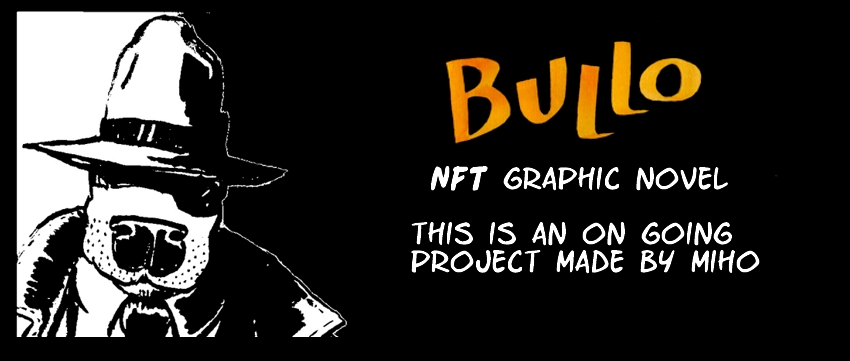

This is an ongoing project made by Miho
The Story about bullo is set in 1930’s, In an imaginary world of humanoid animals.
Bullo is a criminal, a contract killer, a dangerous and an unpredictable person with a few rules about the job: no children, no women and no funny guys. Bullo lives in new york and his best friend is bernie, a humanoid with a domestic cat head. Since bullo is a humanoid with a bull terrier head, bernie was the best choice for the second main character. To have ’a dog and a cat’ as main characters is the perfect combo. They argue a lot, mainly because of bullo’s health issues, which are related to the hemorrhoids at the moment.
The first story is named ’’HAVANA’’, and it is about a business deal that takes them to cuba, a promise land for those who admire cuban cigars and gambling.
Aside of bullo and bernie, there are also many other characters who are mostly criminals, with a few exceptions.
As the story goes further, bullo and bernie get in a conflitc with DADDY PIG, a humanoid with pig’s head-a gangster and a casino owner. Soon after they manage to get to cuba, they meet THREE LITTLE PIGS, dangerous brothers and daddy pig’s nephews...
Since this graphic novel is planned to be NFT minted and for now only displayed here and on other links related to the bullo story, i would like you to follow bullo’s journey and discover what happened in the end.
The graphic novel is made with pencil, ink and watercolour on a 300 grams fabriano paper, size a4.
Bullo is made by MIHO, a sculptor by profession with huge love for comics.
MIHO lives in belgrade, serbia.